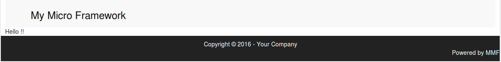
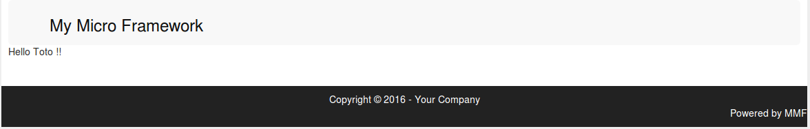

MMF : My Micro Framework
My Micro Framework is a minimalist php framework that doesn't provide a lot of functionality but is very easy to learn.
The aim is not to have to learn anything more than you already know if you know php.
Beginning with mmf
Once downloaded and unzipped, wherever you want on your web server, you will get this :
/var/www/html/…/myproject/
app/
assets/
libs/
mmf/
scripts/
.htaccess
index.php
From here you can access mmf in a browser. A first test page is delivered.
In the rest of the documentation, we'll assume that mmf is installed at the root of the http://test.mycorp.com website.
Some basic concepts
The app/ directory is where you will be working most often.
The assets/ directory contains everything that needs to be directly accessible without processing: css, javascript, images or client libraries combining these elements (jQuery, twitter bootstrap, etc.).
The libs/ directory is for php libraries.
In the app/ folder you'll find 3 sub-directories (actually 5, but we'll come back to that later):
controllers/ ← processes
models/ ← data models (the business layer and the DAO)
views/ ← views (basically html)
The first thing to know is that in mmf you don't need to declare routes/paths for it to work. Routes are implicit, meaning that if I create a test.php file in controllers/
controllers/test.php
<?php
echo "Hello !";
?>
A call to http://test.mycorp.com/test will display
Hello !
Let's delete this file and create a test.phtml file in views/
views/test.phtml
Hello !!
A call to http://test.mycorp.com/test will this time display

which is better.
In fact the simple act of creating a controller or view, creates a page with the name of the controller or view, the difference is that a view is (by default) inserted into a layout (main.phtml by default).
In reality, the best practice to adopt (which you will use for 90% of the 'pages' in an application) is to create 2 files for the same page:
controllers/test.php
<?php
$view_params['nom'] = "Toto";
?>
et
views/test.phtml
Hello <?= $view_params['nom']?> !!
<br><br>
which will display :

The variables declared in a controller are all accessible in the corresponding view. The variable name $view_params is therefore not mandatory, nor does it have to be an array. You can therefore call it whatever you like, but it's a good idea to give it a name that will allow you to differentiate it from the other variables that you'll have to declare in your controllers for your processing. If it's an array, it will also be easier to find the names of the variables to use when you write the view.
Summary
- If you need to write a static page, just write a pure html page in views/.
- If you only need to process a page, you'll only write a php file in controllers/, at the end of which you'll make a redirect.
- If you need to create a contextualised page, you will write a controller in which you will only perform processing and a corresponding view for display.
- Try never to use 'echo' in controllers.
- The urls called up on a site developed with MMF do not have the '.php' extension.
Configuration file
The mmf/config.php file is the central configuration file for your MMF application. It contains the constants that define the framework's behavior.
Session configuration
- MMF_SESSION_NAME : Defines the PHP session name. Useful when running multiple MMF applications on the same server to avoid session conflicts.
- MMF_SESSION_LIFETIME : Maximum session lifetime in seconds. Default: 1800 (30 minutes).
Development mode configuration
- MMF_DEV : Boolean that enables/disables development mode. In DEV mode, errors are displayed in the browser and the log level is automatically set to DEBUG. Warning: never activate in production!
Log configuration
- MMF_LOGLEVEL : Log verbosity level :
- 0 : ERROR (only errors)
- 1 : WARNING (errors and warnings)
- 2 : INFO (errors, warnings and information)
- 3 : DEBUG (all messages)
If MMF_DEV is true, this variable is ignored and the level is automatically DEBUG.
Security configuration (CSP)
MMF integrates a CSP (Content Security Policy) protection to strengthen your application's security:
- MMF_CSP_ENABLED : Enables/disables the CSP policy.
- MMF_CSP_ALLOWED_EXTRA_DOMAINS : List of allowed external domains (separated by commas). Example: ".mydomain.com,.myotherdomain.com".
- MMF_CSP_REPORT_ONLY : If true, the policy is in "report only" mode (violations are logged but not blocked).
- MMF_CSP_REPORT_URI : URL where to send violation reports.
What MMF provides
- A layouts mechanism
- Some useful static functions
- Some useful constants
- An automatic extension mechanism
- Some autoload functions
- A private files mechanism
A layouts mechanism
As mentioned above, all your pages will be inserted into a layout. This is a structure common to several or all the pages in your application. A minimal layout is provided, but you will modify it and perhaps create others.
A few things to know about layouts
- Layouts are phtml files
-
All layouts must contain a line :
echo $mmf_rendered_content; -
All layouts must be stored in the _layouts directory.
For one or more given pages, you can deactivate the layout or specify that you want to use a layout other than the default. To do this, in the controller (usually at the end), you need to call the method :
MMF::disableLayout();
or
MMF::setLayout('myLayout'); //without specifying an extension (we'll come back to this later)
Some useful static functions
You can always explore the code of the MMF class to see what you can do, but as the aim of MMF is not to have to learn anything, none of the MMF functions are necessary for developing with this framework. That said, for the sake of convenience, MMF does provide a few functions (mechanisms) that can save you a bit of time and help you get things done properly.
The first 2 methods are those mentioned above:
- MMF::disableLayout() and MMF::setLayout(): I won't go into them again here.
MMF then offers 2 particularly interesting methods: MMF::redirect() and MMF::error()
-
MMF::redirect() allows you, as its name suggests, to redirect the user to another page of the site passed in parameter
-
MMF::error() takes a character string (an error message) and/or an exception as parameters and redirects the user to a pretty error page.
Some useful constants
MMF provides a number of useful constants, including one in particular that will save you time: ASSETS.
This constant is recalculated each time a page is called up and indicates the root of the assets directory relative to the page that was called up. In your views (and layouts), you can use this constant to include an image or style sheet, for example, to simplify your work.
Ex :
<img src="<?php echo ASSETS?>/images/logo.png />
or
<link href="<?= ASSETS ?>/css/myStyle.css" rel="stylesheet"> <!-- using shorttags -->
An automatic extension mechanism
In your web application you will sometimes want the server to return something other than html. For example, for a pdf export or an ajax call that is supposed to return json.
To do this, using the example from the beginning, simply create a new file in the views/ directory: test.json.php
views/test.json.php
<?php
echo json_encode($view_params);
?>
A call to http://test.mycorp.com/test.json will then display :
{"nom":"Toto"}
Note that the file test.json.php can coexist with the file test.phtml. These are 2 different views of the same controller. This could be useful for dashboards, for example, where a table (html) can be displayed (in a phtml view) based on data collected in the controller, and a link can be used to obtain the same data presented in a pdf or excel file, by implicitly calling the same controller with different views (pdf.php or xls.php views).
- A controller is always a file with the extension .php
- An html view has the extension .phtml
- All other types of view have the desired extension (relative to the type) followed by .php
Some autoload functions
MMF provides 2 autoload functions which should normally find the classes you use in the libs/ and app/models/ folders. Note that in the latter, classes will only be found if the tree structure respects the namespaces starting from this directory.
For libs/, we are more tolerant, as the php libraries found here and there do not always use namespaces and use various naming conventions.
To find out more about autoloading in MMF, take a look at mmf/autoload.php
A private files mechanism
MMF offers a way of creating files that cannot be accessed directly : the '_' prefix.
As mentioned above, the simple declaration of a controller or view creates a new accessible url. However, you may need to create files for inclusion purposes without wanting them to be directly accessible.
To do this, simply prefix the file name with a '_' and the file will be ignored by MMF. The same mechanism works for directories, and all files contained in a directory beginning with '_' will be ignored, even if they don't start with a '_'.
Ex :
app/controllers/admin/
index.php ← check that you are authenticated and have the appropriate rights
and include the requested controller in the url
_console.php ← a management console
_add.php ← to add an item
_modify.php ← to update an item
…
The index.php file could look like this:
<?php
$actions = array('console','add','modify',...);
if(isset($_SESSION["user"])) {
$user = unserialize($_SESSION['user']);
if($user->getProfile() == 'administrator'){
$action = isset($_GET['action']) && in_array($_GET['action'], $actions) ? $_GET['action'] : $actions[0];
include('_'.$action.".php");
}
else{
MMF::redirect('/not_authorized') ;
}
}
else{
MMF::redirect('/login') ;
}
?>
So the user won't be able to access console.php, add.php or modify.php directly without going through the index, and an attempt to access http://test.mycorp.com/admin/_console will produce a not found error. The file is hidden.
We could also have grouped the 3 files together in a '_include/' directory, which would have hidden everything underneath (even though the files are not prefixed).
Summary
- A file that should not be directly accessible can be hidden if it is prefixed with '_'.
- If a directory starts with a '_', everything below it is hidden.
Event management
Let's imagine that the following file has been included in our controller:
<?php
// Callback functions
function onAddUser($id){
// some actions for other app for example
...
}
// Register callbacks
MMF::registerListener("addUserEvent", "onAddUser");
?>
So, elsewhere in our processing, we can make a :
...
//the code for adding a user
...
MMF::fireEvent("addUserEvent", array($userId));
The "onAddUser" function will then be called with the parameters passed as arguments.
This can make it possible to apply certain treatments that fall outside the scope of our main logic by taking them out of our controller.
Notes on events
- An event can be registered several times to play several functions.
- You can determine the order in which functions are called (see MMF::registerListener()).
- Callback functions are called during the current execution (no asynchronous mechanism).